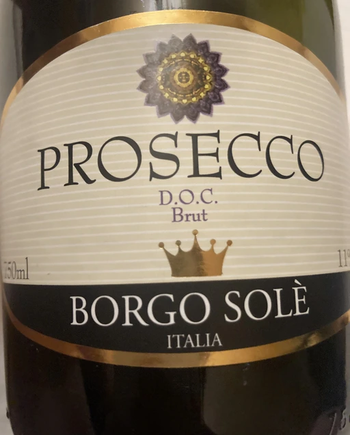

- Type
- White Sparkling, Brut
- Producer
- Borgo Solè
- Vintage
- NV
- Location
- Italy, Prosecco DOC
- Grapes
- Glera
- Alcohol
- 11
- Sugar
- NA
- Price
- 400 UAH
- Cellar
- N/A
Ratings
2022-05-27 - 6.50
One of those cases, where there is little to say about wine. Straightforward, honest and does it job. Sparkles? Check. Relaxing flowery-apple-like nose? Check. Good mood? Check. Just another Prosecco to drink and forget.